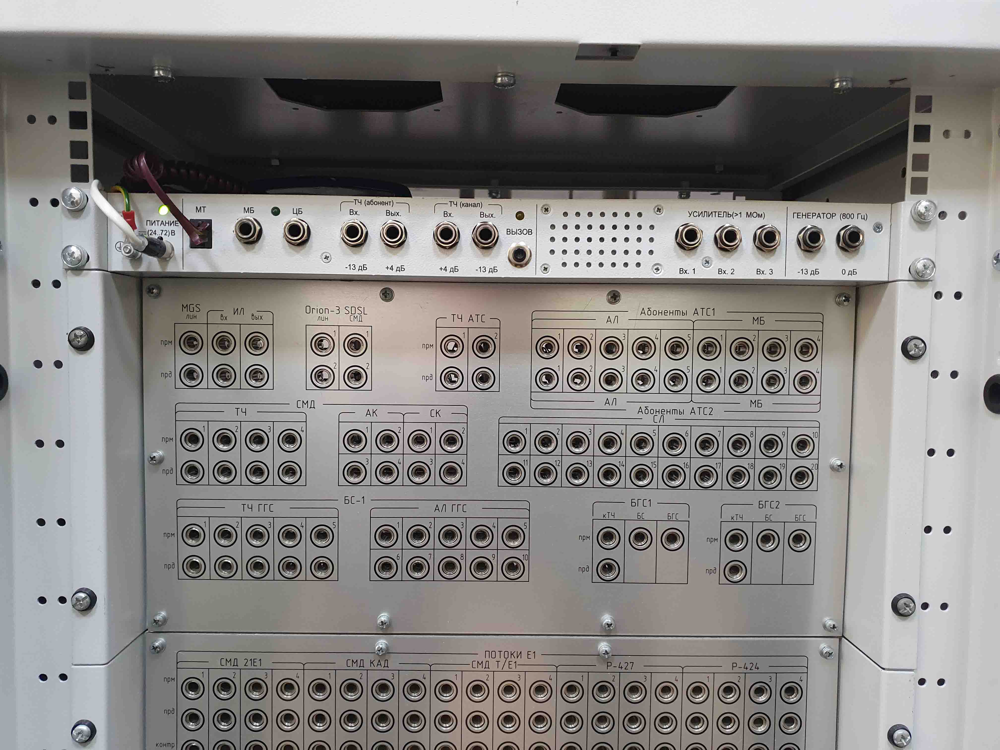
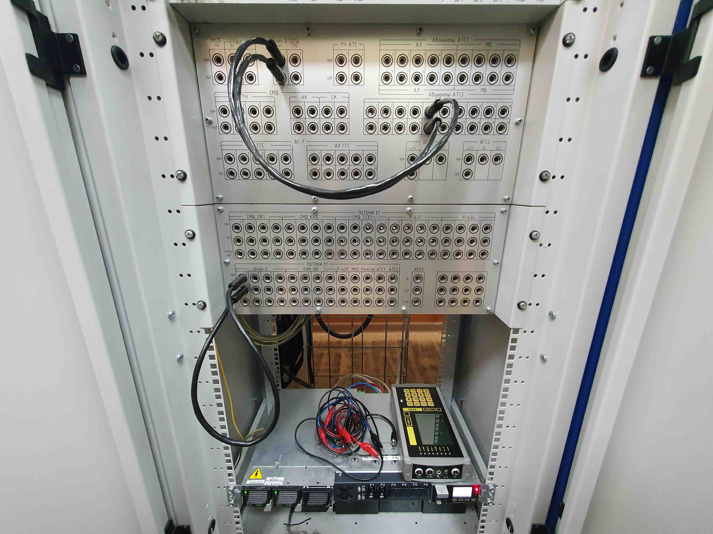
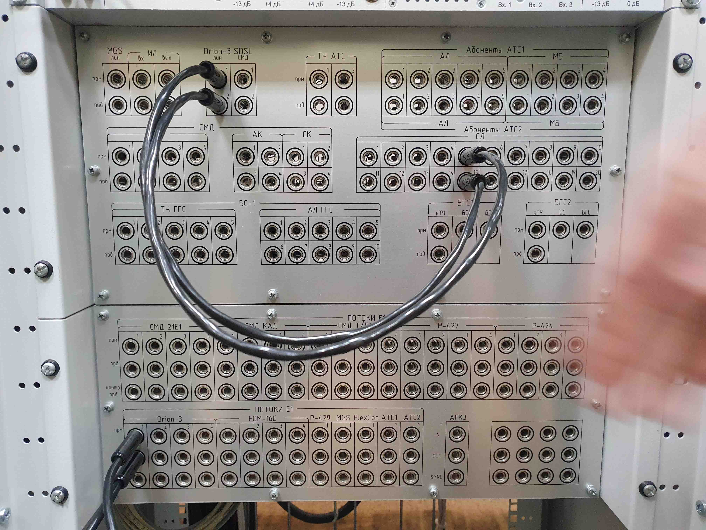
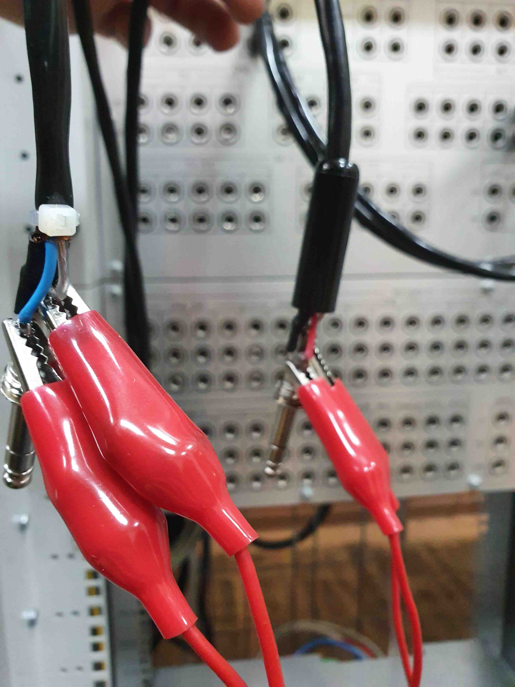
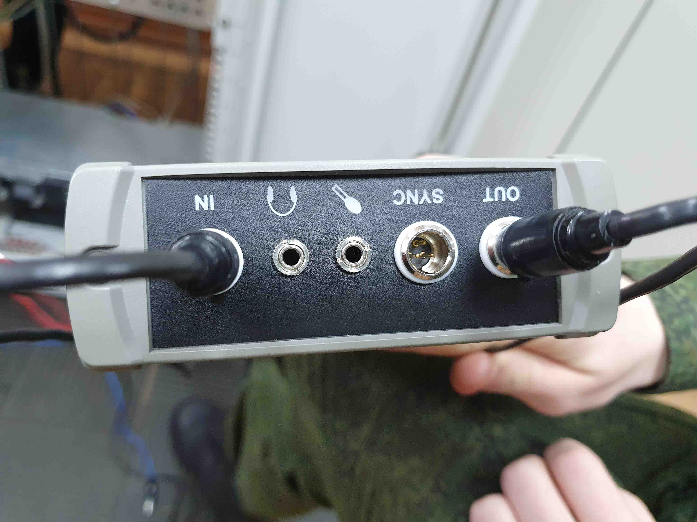
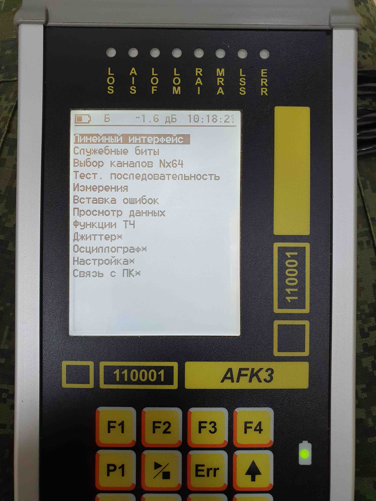
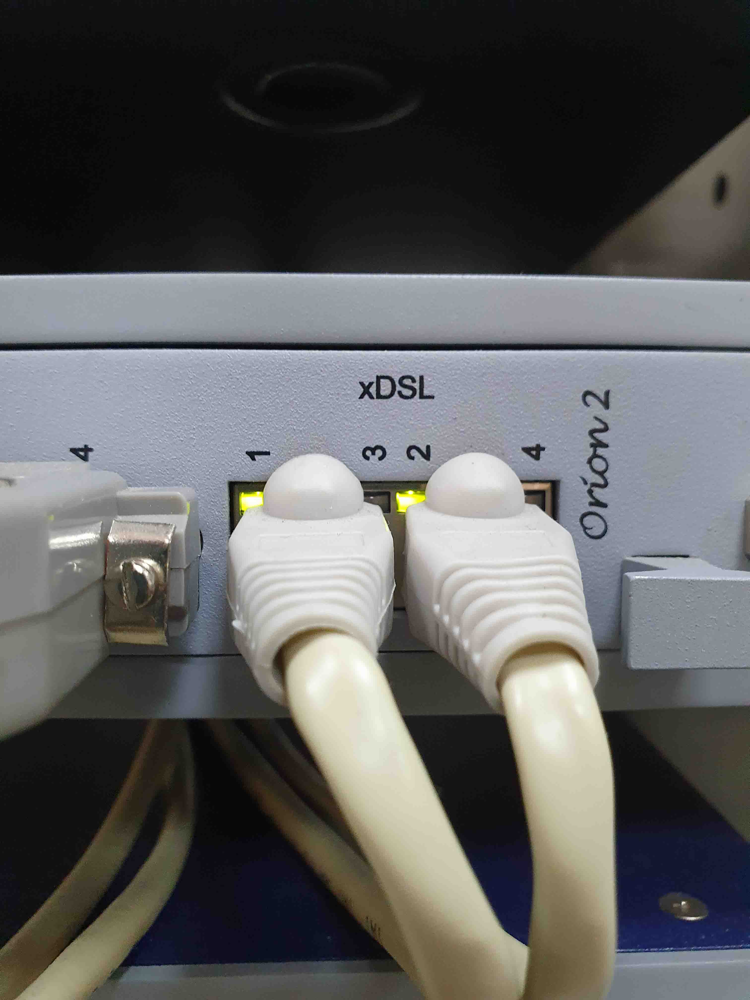

Электронный учебно-методический комплекс
по дисциплине
"Специальная подготовка"
для специальности
ВУС 403290 - Начальник аппаратной
Организация громкоговорящей связи с использованием БС-1
Видео 1 - Организация шлефов
Видео 2 - Работас с БС-1
Проверка потока E1 посредством AFK-3
Рисунок 1 - Коммуникационное поле
Рисунок 2 - Установка шлейфа по потоку E1 (Аудитория 1)
Рисунок 3 - Установка шлефов для измерения потока E1 (Аудитория 2)
Рисунок 4 - Крепление зажимов AFK-3 на шлейфе
Рисунок 5 - Подключение зажимов к AFK-3
Рисунок 6 - Включаем AFK
Рисунок 7 - Проверка соединения Orion'ов